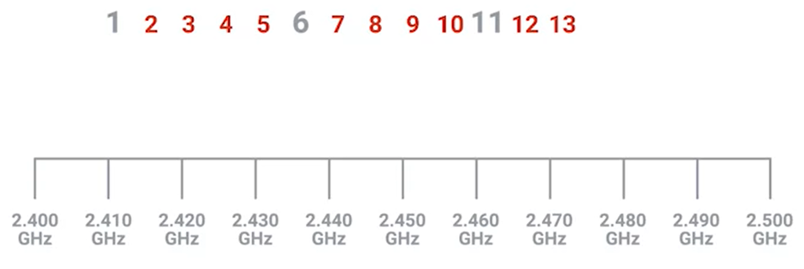

Channels are individual, smaller sections of the overall frequency band used by a wireless network
channels help avoid collision domain (overlaped communication)

each channel has a width of a few MHz, because of this width, some channels overlap.
and some are far enough from each other:

Today, most wireless networking equipment is built to auto sense what channels are most congested. Some access points will only perform this analysis when they start up, others will dynamically change their channel as needed.